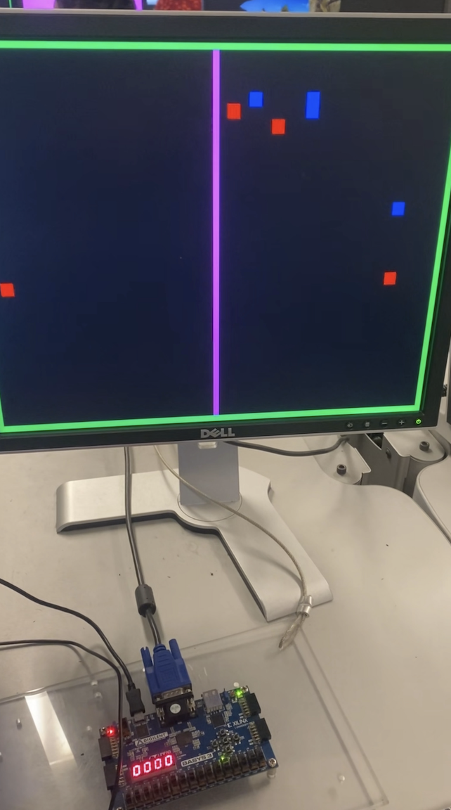

Implementation of the Osmosis game on the BASYS3 FPGA development board
Overview
This interactive game uses a BASYS3 board and VGA monitor to simulate the movement of red and blue molecules
across a membrane, allowing the player to sort the molecules by changing the color of the membrane.
Utilizing Verilog for game logic, the design challenges included generating VGA signals, manipulating RGB data,
and implementing responsive game controls via physical buttons on the board.
Technical Implementation
VGA Signal Generation
The project required precise timing for VGA signal generation. This included:
Implementing horizontal and vertical sync signals with proper timing requirements
Creating pixel clock and position counters
Managing the display area versus blanking periods
Game Logic
The core game mechanics were implemented using Verilog state machines:
Particle motion simulation with pseudo-random movement patterns
Collision detection between particles and the membrane
Selective permeability rules based on membrane color
Player score tracking based on successful sorting of molecules
User Interface
The game interface includes:
Button inputs from the BASYS3 board for controlling membrane color and game reset
Visual feedback through LED indicators showing game status